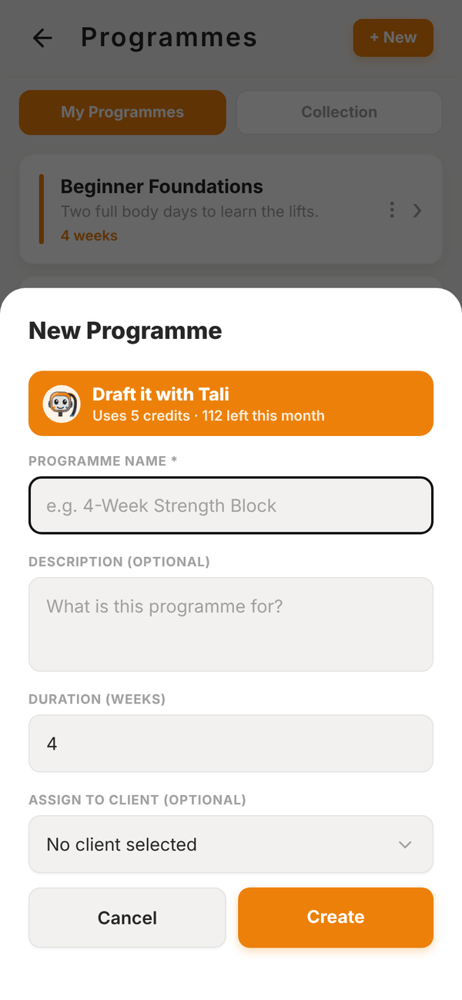
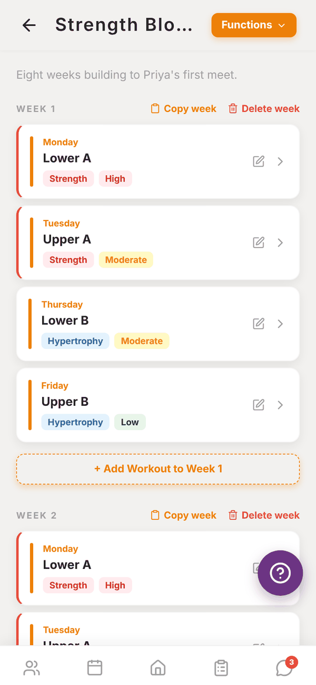
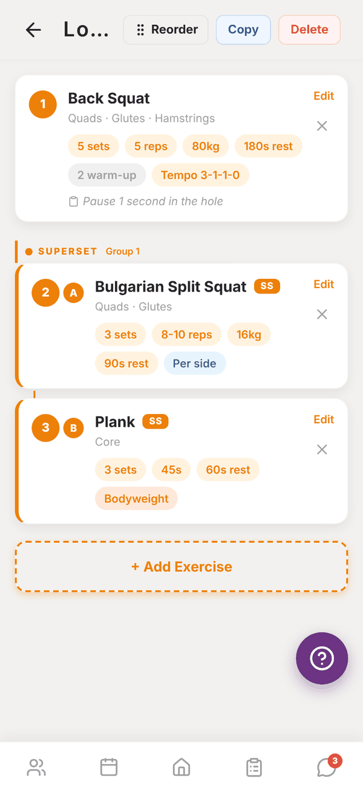
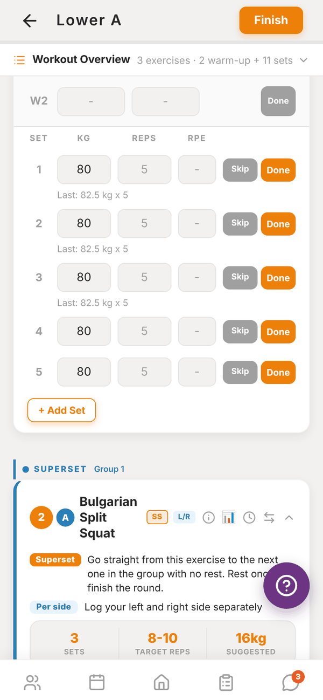
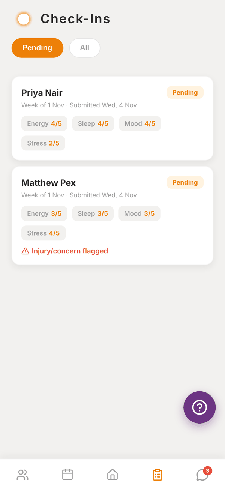
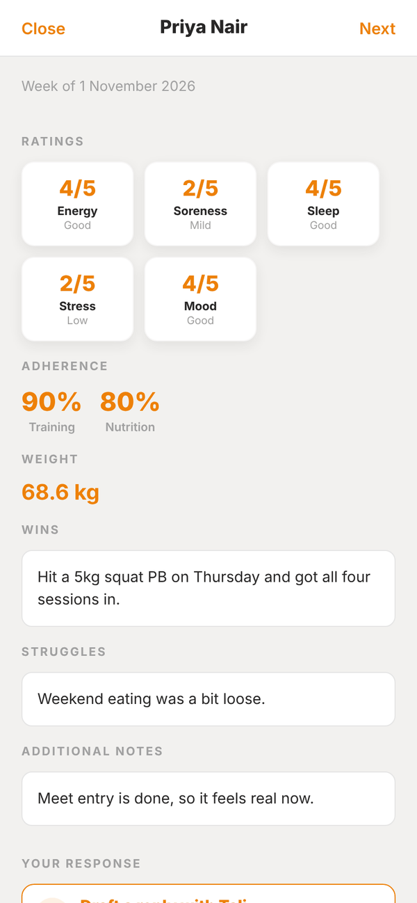

{{lede}}
Weeks, sessions and exercises with sets, reps, weight, rest and tempo. Assign the same programme to as many clients as you like.
Steps 1 to 3.
In person, you log their sets on your phone as you go. Online, they log it themselves in their app. Either way it's in their history.
Step 4.
Every client gets a check-in each week: sleep, energy, stress, mood, how training and food went, weight, wins and struggles. You reply in the app.
Step 5.
Their weight, measurements, photos and strength build up on their profile as they log, so you can see what's working.
On each client's profile.
| In the app | What it means |
|---|---|
| Programme | A block of training, for example 8 weeks. It holds the sessions. |
| Session | One workout on a set day, for example "Upper Body A" on Monday of week 1. |
| Block Type and Intensity | Optional coloured tags on a session: Hypertrophy, Strength, Power, Deload or General, and Low to Max. |
| Set Type | Normal, Superset, Drop Set, Myo Reps, AMRAP, Giant Set or Rest-Pause. Your client sees how to do each one. |
| Warm-up Sets | Shown first and not counted in their progress. |
| PRIMARY | A client can have more than one programme. The primary one is their main programme. |
Starting from an old one? Tap ⋮ on its card, then Duplicate, for a full copy to change.


In week 2 onwards, Copy from Week 1 copies the same day's exercises from the week before.

Sets are saved on your phone as you go, so nothing is lost if the app closes.



| When | What you do |
|---|---|
| Sunday | Check-ins arrive. Reply on Sunday night or Monday morning. |
| Monday | Anyone who missed theirs shows as overdue. A quick message usually gets it in. |
| Each session | Run it in the app, or check their logged workout if they trained on their own. |
| End of a block | Duplicate the programme, adjust it from their progress, and assign the new one. |